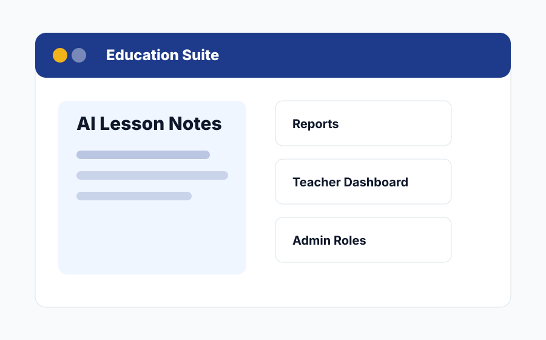
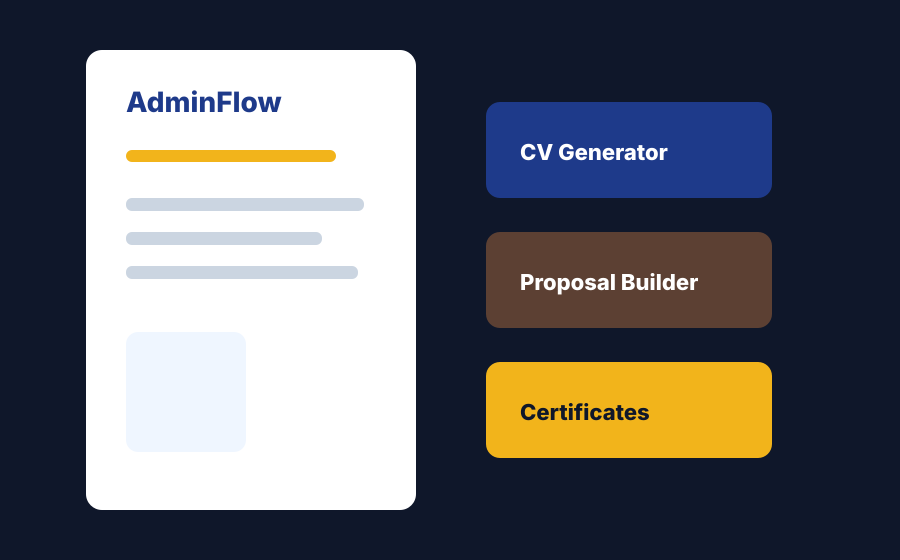
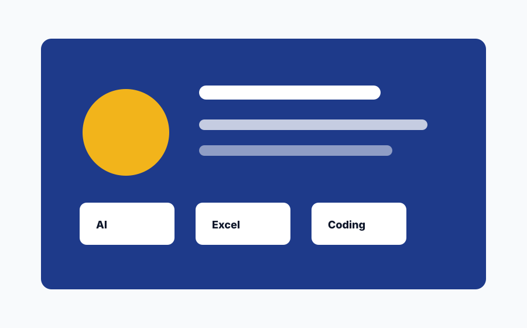

J JENECONK
Corporate proposal
Digital Growth
Strategy
Prepared for forward-thinking organizations
2026Technology, Training and Productivity Systems
JENECONK helps schools, professionals, and organizations work smarter through CBT setup, AI-powered school documentation, professional document generation, AI productivity training, ICT programs, and practical digital support.
Online/offline exams, school assessments, recruitment tests, and LMS-style learning environments.
Reduce teacher workload AI lesson notes and reportsFocused school documentation tools for lesson notes and report generation.
Create documents Business SuiteCVs, cover letters, proposals, official letters, certificates, and business documents.
Build skills Professional trainingPRINCE2 support, AI productivity, Python, data analysis, project management, and ICT programs.
Get support Laptop and ICT servicesDevice advice, workspace setup, software installation, computer support, and practical ICT help.
Core business pillars
JENECONK is built from years of school, ICT, training, and productivity experience. The offer is not theory: it is systems people can use, training people can apply, and support organizations can rely on.

AIAI lesson note generation and school report generation for schools and teachers who want less paperwork stress.
Open Education portal
BSA professional document cafe for CVs, cover letters, proposals, official letters, certificates, and polished business documents.
Open Business Suite CBT
CBT
Online and offline CBT environments for schools, organizations, training centers, exams, assessments, and LMS-style learning.
Open CBT Portal
TRPRINCE2 support, project management, Python, data analysis, web design, AI productivity, ICT, and corporate training.
View programsBuilt from experience
JENECONK brings together more than a decade of school experience, years of ICT training, laptop and setup support, professional exam environment assistance, and current AI productivity systems.
Independent product portals
CBT, Edu Suite, and Business Suite each have a focused destination, while the main JENECONK website explains the wider value and helps visitors choose the right path.
 Education Suite Portal
AI lesson notes and school report generation for teachers and schools.
Open Education portal
Education Suite Portal
AI lesson notes and school report generation for teachers and schools.
Open Education portal
 Business Suite
Professional CVs, letters, proposals, certificates, and smart templates.
Open Business Suite
Business Suite
Professional CVs, letters, proposals, certificates, and smart templates.
Open Business Suite
Beyond generative AI
JENECONK focuses on systems that improve human capability: better documents, better teaching support, faster school workflows, smarter training, and more reliable digital operations.
See all solutionsBuilt for launch and growth
From school pilots to business productivity tools, the brand experience is designed to feel trustworthy, modern, and ready for hosted SaaS expansion.

Quick answers
Clear answers for schools, professionals, training centers, and organizations comparing CBT, training, AI productivity, document generation, and ICT support.
Yes. JENECONK supports CBT environments for online and offline examination use, including school assessments, entrance exams, training tests, and result workflows.
It focuses on AI lesson note generation and school report generation, giving teachers and schools a cleaner way to reduce documentation stress.
Business Suite is for people and organizations that need professional documents quickly: CVs, cover letters, proposals, certificates, official letters, and branded templates.
Yes. Professional training remains a backbone of the company, including PRINCE2 Foundation support, project management, Python, data analysis, web design, AI productivity, and ICT skills.
Start with the right system